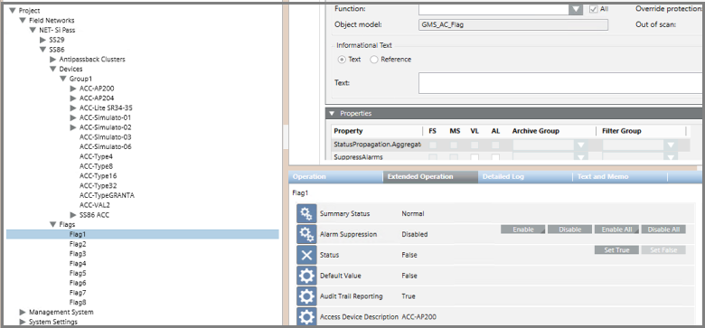

SiPass Flags
This section describes the SiPass Flag objects and their corresponding statuses and commands.

NOTE: In the System Browser tree, the flags are not located underneath their respective access controllers (ACCs). Instead they are all grouped together under the Flags folder, directly underneath the SiPass server node.
Property | Description and Commands |
|---|---|
Status | The current status of the flag (
|
Default Value | The initial status of the flag as configured in SiPass integrated. |
Audit Trail Reporting |
|
Access Device Description | The name of the ACC under which the flag is configured. |